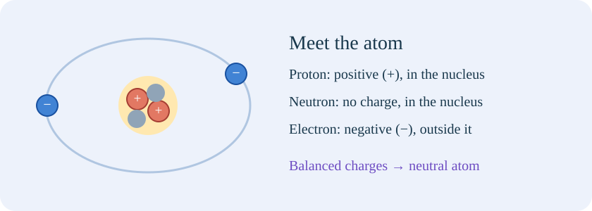

IDEA 01Start with the tiny pieces: atoms and charge.

Everything you can touch is made of atoms, tiny building blocks of matter. An atom has a central nucleus containing positive protons and uncharged neutrons. Negative electrons occupy the region outside the nucleus. Positive and negative describe two kinds of electric charge, a property that causes electrical forces; they do not mean good and bad.
A proton and an electron have equal-sized but opposite charges. A neutral atom has equal numbers of them, so their charges balance. Neutral does not mean “no charged particles”: it means zero total, or net, charge. A nucleus is not normally exchanged when you rub everyday objects together.
Charge is measured in coulombs (C). One electron has charge −1.602176634 × 10⁻¹⁹ C, so a coulomb is a very large amount on an atomic scale. About 6.24 × 10¹⁸ electrons have a total charge of −1 C. One microcoulomb (μC) is 0.000001 C. The letter C is uppercase; the prefix micro means one millionth. A negative power of ten is shorthand for a fraction: 10⁻⁶ means 1/1,000,000.
A helpful balance: 8 positive charges and 8 negative charges give zero net charge. Add one electron and the net charge is −1 elementary charge. Remove one electron and it is +1. “Elementary charge” means the magnitude of one proton’s charge; it is much smaller than a coulomb.
IDEA 02Rubbing transfers electrons; it does not make charge.
Imagine rubbing a balloon with dry hair or a cloth. Repeated contact and separation can transfer electrons between their surfaces. Which material gains them depends on the pair and their conditions. In our chosen balloon–cloth model, electrons go from cloth to balloon. The balloon becomes negative and the cloth becomes equally positive.
The cloth is positive because it has lost negative electrons, not because positive protons travelled into it. Charge is conserved: the total charge of an isolated pair stays the same. Rubbing helps make contact; it does not create extra electrons from nothing.
Static electricity is an imbalance of charge that persists on an object. Static means the charge is not flowing continuously around a conducting circuit; it can still move during charging, redistribution or a discharge. Dry conditions often help charge persist, whereas moisture can help it leak away.
Remember: gain electrons → negative; lose electrons → positive. In the lab, compare both charge counters after every transfer. The few drawn symbols stand for a tiny selected part of each object, not every atom in a balloon.
IDEA 03Attraction, repulsion and the surprising neutral wall.
A force is a push or pull. Like net charges repel: two positives or two negatives push apart. Opposite net charges attract: a positive and a negative pull together. Electrical forces act without the objects touching and usually weaken with distance.
A charged balloon can also attract a neutral wall. The balloon slightly shifts the distribution of charge in the wall, putting opposite charge closer and like charge further away. The nearer attraction is stronger than the further repulsion. This redistribution is called polarisation; the wall can remain neutral overall.
Attraction alone therefore does not prove that an object has the opposite net charge: it might be neutral and polarised. Clear repulsion from a known charged object is better evidence of a like charge. In our force view, the arrows show direction qualitatively, not a measured force in newtons.
Remember: like pushes; unlike pulls; neutral can rearrange. The force view keeps net charges separate from the small surface shifts used to explain a neutral object’s response.
IDEA 04Conductors, insulators and a path to Earth.
In a metal conductor, some electrons are mobile through the material; its positive ion cores remain in the solid lattice. An ion has net electric charge; the metal’s cores are positive because some electrons are shared in the mobile electron system. A lattice is an organised arrangement of particles. In an insulator, charge cannot move through the material nearly as easily, so a surface patch may remain charged.
Earthing, also called grounding, connects a conductor to the Earth through a conducting path. If our metal sphere has excess electrons, some flow to Earth; if it has an electron deficit, electrons can flow from Earth to the sphere. Earth is a huge charge reservoir, rather than a special source of only negative charge.
Earthing can remove the net charge of this isolated sphere once the external charging influence is absent. An insulating balloon will not necessarily discharge everywhere just because a small spot touches a wire. This is why the earthing activity deliberately uses a metal sphere.
Remember: a path permits transfer. Click the cable and the earth terminal in the virtual lab. Watch the direction of the electrons, then check that the sphere’s positive and negative totals balance.
IDEA 05Sparks, lightning and controlling unwanted charge.
A sufficiently strong electric field can make air conduct. A sudden transfer of charge through that air is a discharge; a spark is one visible example. An electric field describes the force per unit positive test charge at a position. You do not need to calculate fields in this introductory lesson.
Charge separation in storm clouds can produce lightning within clouds, between clouds or to the ground. Lightning is not guaranteed to take a simple shortest route or strike only the tallest object. A designed lightning-protection system provides a preferred conducting route and helps manage the resulting current; no outdoor location is made safe by a classroom rule about height.
During fuel handling, professionally designed bonding joins conducting parts to reduce potential differences and the risk of a spark. Bonding means linking objects electrically; earthing adds a connection to Earth. These are industry examples, not instructions to experiment with fuel or high voltage.
At home, a brief carpet-and-door-handle spark is an electrostatic discharge. Compare it with a closed battery circuit: the spark quickly redistributes a stored imbalance, while the cell can maintain an energy supply to a continuing current.
IDEA 06Useful attraction: printing, painting and cleaner exhaust.
A laser printer or photocopier uses controlled charge patterns to attract toner, a fine coloured powder, to selected places before fixing it to paper. Charge helps place a material where it is wanted; it does not turn charge itself into ink.
In electrostatic spray painting, charged droplets are attracted towards a suitably connected workpiece. Repulsion between similarly charged droplets can help spread the spray. Industrial conditions and geometry matter, so attraction is only part of an actual process.
An electrostatic precipitator gives suspended particles charge and attracts them towards collecting surfaces. It removes many particles from a gas stream; it does not automatically remove all gaseous pollutants. The particles can later be removed from the collection plates.
A defibrillator is different: it delivers a controlled electrical pulse for particular abnormal heart rhythms. It is an example of electrical energy and current, rather than simple static attraction, and it does not restart every stopped heart. Leave its operation to appropriate training and automated instructions.